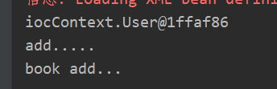

本篇文章主要介绍是IOC和DI，介绍其注解的方式实现，并设置一个例子进行说明
一、Spring基础知识IOC和AOP
IOC（控制反转）
中文名叫做控制反转，主要就是实现动态代理这个的东西，为的就是将创建对象交给spring，然后使用工厂的模式和动态代理的方式进行创建对象。
总共有两种方式进行实现，配置方式和注解方式 （主要的使用方式）
在进行ioc的时候，免不得出现需要属性注入的操作，也就是怎么讲变量的值或者是一个对象传递过去，这种操作较DI也即是依赖注入。 主要也就是对象的注入，因为这样的话就是可以实现两个对象之间的耦合，实现数据的传输。
IOC和DI的区别
- IOC：控制反转，把对象创建交给spring进行配置
- DI：依赖注入，向对象里面的属性进行设置值
- 关系：依赖注入不能够单独的存在，需要在ioc的基础上完成操作。
AOP（面向切面）
主要的作用是为了实现（目前的认知）：就是记录某个方法的运行状态，或者是增强某个方法。但是这个的方式现在还是不是很熟悉。
aop常用的是在数据库编程中，也就是事务的编写，主要解决的问题就是当一个请求需要多个部门进行审核的时候，请求在某个部分不被通过，那么就直接被驳回？ 但是这个aop又有什么关系？
二、IOC的实现方式
使用配置的方式进行注入
1
2
3
4
5
6
7
8
9
10
|
<bean id = "book" class="ioc.Book"></bean>
<bean id="user" class="ioc.User">
<property name="userName" value="小红" ></property>
<property name="book" ref="book"></property>
</bean>
|
首先bean标签表示新建一个对象， property标签表示调用的set方法进行的属性的注入。这种方式就是表示，所有的类都是可以通过这种方式进行进行对象的创建。包括jar包中的类。
常用的注解
在类上使用的注解，表示这个类由spring进行构建
@Component 最基础的@Controller WEB层@Service 业务层@Repository 持久层
以上四个注解都是表示将类交给spring进行 处理，虽然名称不一致，但是作用是一致的，不同的名字表示这个对象是用在哪一个层，是的对象更好的分类
进行注入的注解
例子测试
以下为注解的方式进行测试spring代码。测试平台为idea，新建spring项目即可。
总共有四个文件 user.java book.java bean.xml test.java，其中user对象中进行注入book对象。
1
2
3
4
5
6
7
8
9
10
11
12
13
14
15
16
17
18
19
20
21
| User.java
@Component(value = "user")
public class User {
@Autowired
public Book book;
public void add(){
System.out.println("add.....");
book.add();
}
}
Book.java
@Component("book")
public class Book {
public void add(){
System.out.println("book add...");
}
}
|
1
2
3
4
5
6
7
8
9
10
11
12
13
14
15
16
17
18
19
| 这个主要需要注意的就是依赖的引用。即bean依赖和context依赖。
<?xml version="1.0" encoding="UTF-8"?>
<beans xmlns="http://www.springframework.org/schema/beans"
xmlns:xsi="http://www.w3.org/2001/XMLSchema-instance"
xmlns:context="http://www.springframework.org/schema/context"
xsi:schemaLocation="
http://www.springframework.org/schema/beans
http://www.springframework.org/schema/beans/spring-beans.xsd
http://www.springframework.org/schema/context
http://www.springframework.org/schema/context/spring-context.xsd ">
<context:component-scan base-package="iocContext"></context:component-scan>
</beans>
|
最后是测试Test.java的。需要做的主要有加载xml文件获取spring构建的对象。
1
2
3
4
5
6
7
8
9
10
11
12
13
14
15
16
17
18
19
20
21
22
23
24
25
26
27
28
| package iocContext;
import org.junit.Test;
import org.springframework.context.ApplicationContext;
import org.springframework.context.support.ClassPathXmlApplicationContext;
public class TestContext {
@Test
public void Test(){
ApplicationContext context = new ClassPathXmlApplicationContext("beanContext.xml");
User user = (User) context.getBean("user");
System.out.println(user);
user.add();
}
}
|
最后可以很好的输出结果。
